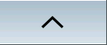
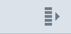
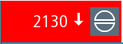
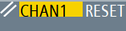

Further operator touch controls
Operator control | Function |
|---|
 | Advances to the next horizontal softkey bar. When page 2 of the menu is called, the arrow appears on the right. |
|  | Advances to the higher-level menu. |
|  | Advances to the next vertical softkey bar. |
|  | Tapping the Cancel alarm symbol clears all queued cancel alarms. |
|  | If a channel menu has been configured, it is displayed. Tapping the channel display in the status display switches you to the next channel. |
See also:
Screen layout